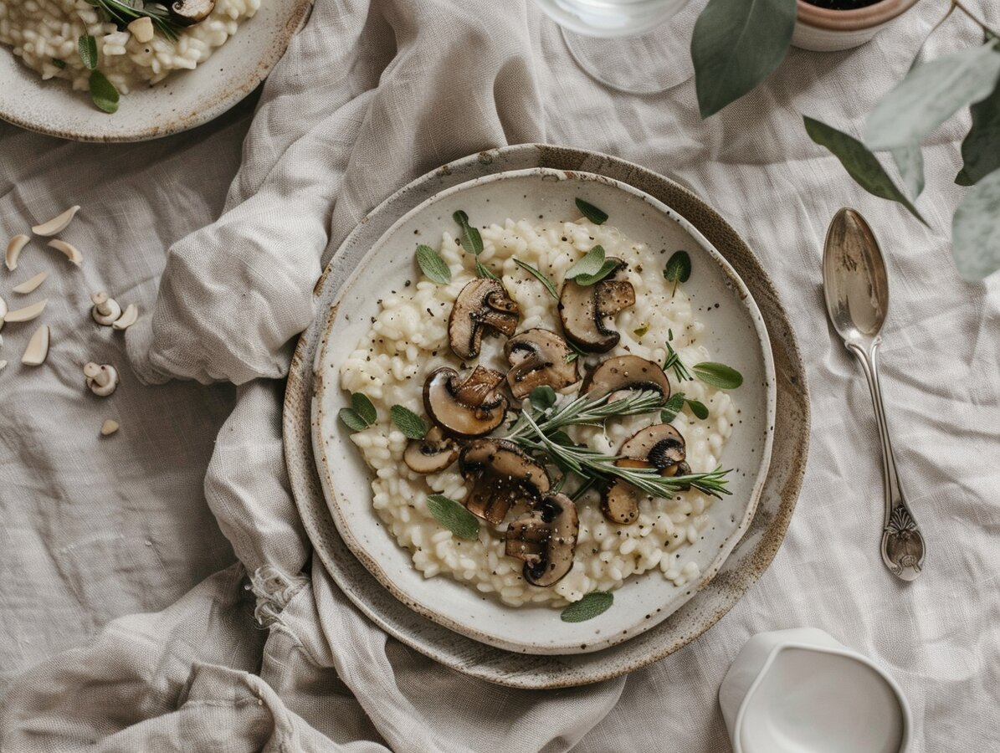

L A R K I N
Operational calm for modern life
You remember the birthdays. You pack the lunches. You sign the permission slips, buy the teacher gifts, manage the schedules that live entirely in your head. You're holding the entire operation together, and you're doing it on three hours of sleep and cold coffee.
The invisible load is real. It isn't just remembering—it's the 47 browser tabs of decision fatigue that come after. And nobody's checking if you're okay.
Until now.